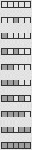
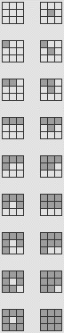

| For simplicity we consider only
binary CA.
The extension to S > 2 is straightforward. |
| Outer totalistic CA rules
depend on only the number of live cells
in a neighborhood, with the additional condition that we allow different outcomes if the
central cell is alive or dead. |
| For one-dimensional, N = 3 rules
the nbhd around the central cell can have 0, 1, or 2 cells alive. |
| Thus S = 2, N = 3
outer totalistic CA rules have six nbhd configurations. On the right we see how these
are represented in our CA software.
Note each configuration is represented by an example. |
| 1. Central cell dead, 0 surrounding cells alive |
| 2. Central cell alive, 0 surrounding cells alive |
| 3. Central cell dead, 1 surrounding cell alive |
| 4. Central cell alive, 1 surrounding cell alive |
| 5. Central cell dead, 2 surrounding cells alive |
| 6. Central cell alive, 2 surrounding cells alive |
|
|
|
| Here is an N=3 example. |
| Outer totalistic rules can be formulated for one-dimensional N = 5,
two-dimensional von Neumann, and two-dimensional Moore CA. Here are the tables. |
|  |
 |
|
|
 |
|
| Here is a von Neumann example.
|